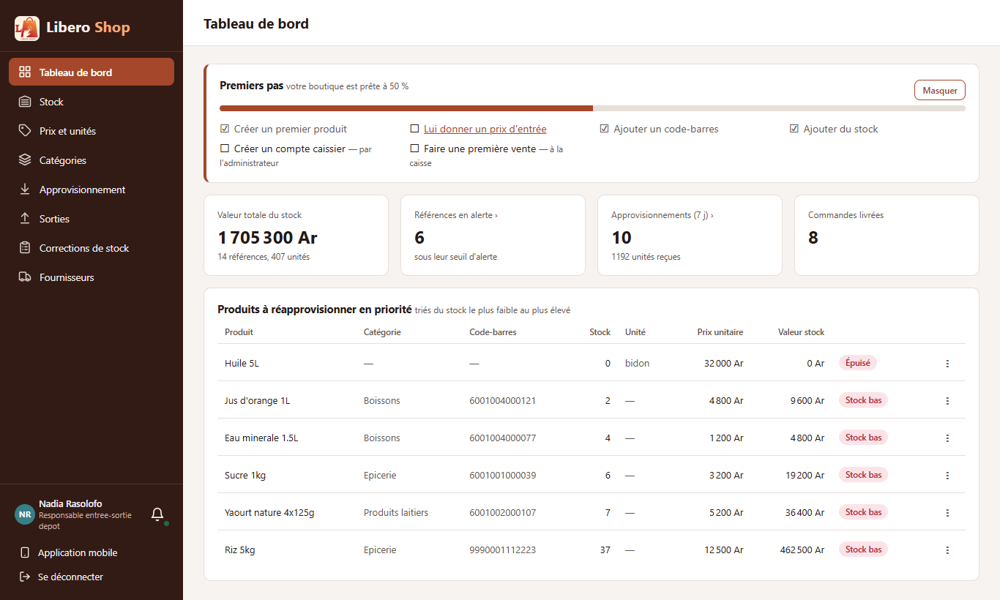
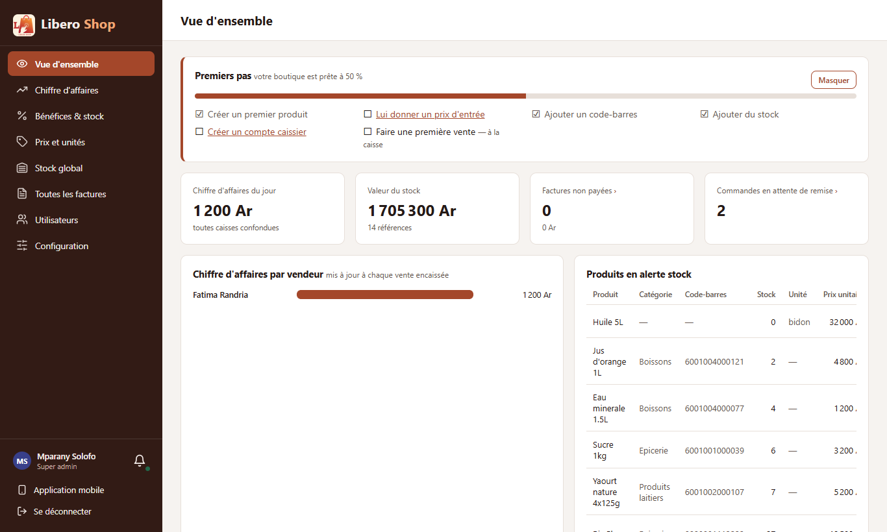

← Tous les comptes rendus de l'interface
UI-84Premiers pas d'une boutique neuve
- Sur le tableau de bord de l'administrateur et du responsable de dépôt, une carte « Premiers pas — votre boutique est prête à 50 % » liste six étapes.
- Les cases se cochent seules : le serveur regarde ce que la boutique contient (un produit importé compte autant qu'un produit saisi).
- Chaque étape à faire est un lien vers l'endroit où la faire ; « Créer un premier produit » ouvre la fenêtre sur place.
- Ce qu'un compte ne peut pas faire lui-même est dit sans lien : « Créer un compte caissier — par l'administrateur ».
- La carte disparaît quand tout est fait, ou sur « Masquer ».
1. Le problème
Une boutique neuve ouvre sur des tableaux de bord à zéro, sans dire par où commencer : produits, prix d'achat, codes-barres, stock, comptes, première vente. L'ordre compte : sans prix d'entrée, pas de bénéfice ; sans caissier, pas de vente.
2. Ce qui a été fait
Le serveur répond en une fois ce qui est déjà en place (GET /api/dashboard/first-steps) : un produit, un
prix d'achat connu, un code-barres (sur le produit ou sur un de ses cartons), du stock, un compte caissier actif, une
vente. La carte se recharge à chaque mouvement de stock : créer, recevoir ou vendre coche la case sans recharger la page.
« Masquer » est retenu sur l'appareil. Une boutique déjà en route, comme la boutique de démonstration, ne voit pas la carte : tout y est déjà fait.
3. Le résultat en images
Captures avec une boutique simulée à mi-chemin (produit, code-barres et stock en place).
Nadia — responsable de dépôt

Mparany — administrateur

4. Tableau récapitulatif
| Fichier | Changement |
|---|---|
backend/…/service/FirstStepsService.java | nouveau : les six étapes lues dans les données |
backend/…/web/DashboardController.java, web/dto/FirstStepsResponse.java | GET /api/dashboard/first-steps (responsable de dépôt, administrateur) |
backend/…/repository/ProductRepository.java, ProductPackagingRepository.java | questions « existe-t-il… ? » |
ui/…/core/setup/first-steps.ts | nouveau : étapes, liens selon le rôle, pourcentage |
ui/…/shared/components/first-steps.component.ts | nouveau : la carte, « Masquer » |
manager-dashboard.component.ts, admin-overview.component.ts | la carte en haut ; « Nouveau produit » sur place |
| Règle | Test |
|---|---|
| Boutique neuve : rien de fait ; chaque étape suit les données ; un code-barres de carton compte | FirstStepsServiceTest |
| Pourcentage ; premier produit sur place ; liens propres à chaque rôle ; compte caissier « par l'administrateur » | first-steps.spec.ts |
Tests : serveur au vert (625 tests), interface au vert (294 tests).